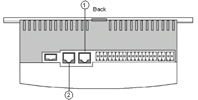
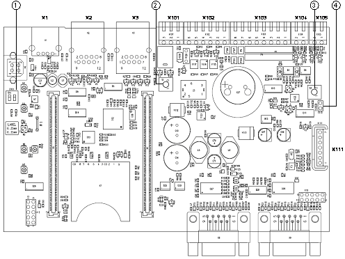
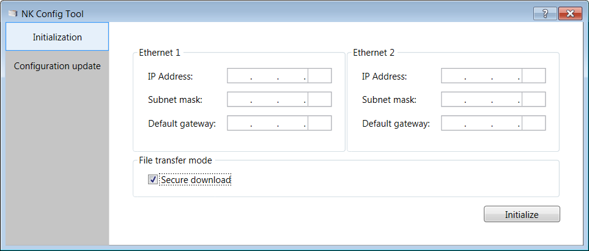

Downloading the Initial NK823x Configuration from a Service Computer
Scenario
You want to enable an NK8823x unit to communicate on the client’s network with a specific IP setting, IP address, subnet mask, and default gateway.
- Connect your service PC to the LAN where the NK823x is also connected. You can use a LAN cable between the computer and the NK823x unit.

NK823x, top view: position of LAN Port 1 and LAN Port 2 - In the Local Area Connection properties of the service PC, take note of the current IP address, and then set the IP address to 192.168.9.x (for example, 192.168.9.254) and the subnet mask to 255.255.255.0. This is for connecting to the NK823x LAN port 1. If you want to connect to the NK823x LAN port 2, set IP address to 192.168.10.x (for example, 192.168.10.254).
- Remove the cover of the NK823x to be configured. Press the four white tabs to the rear of the left and right sides of the unit, and lift gently.
- On the NK823x board, set DIP-switch 1 to ON (for connecting to LAN port 1) or DIP-switch 2 to ON (for connecting to LAN port 2).
- Reset the NK823x (press the reset button).

NK823x board components:
1: DIP-Switches
2: Reset button
3: Tamper switch
4. Tamper jumper: close it to disable the box tamper - In the NK Config Tool, select Initialization.
- Enter values into the IP Address, Subnet mask, and Default gateway fields for Ethernet 1. If the second line will also be used, enter the corresponding set of information for Ethernet 2.

- The File transfer mode check box is set to Secure download by default (encrypted data transmission on TCP port 20500). If you have a local and safe connection to NK823x, you may want to deselect the check box and apply a faster FTP passive mode.
NOTE 1: The use of the FTP mode on public or unsecure networks creates serious security vulnerabilities.
NOTE 2: The file transfer mode setting will be applied to the subsequent downloads. - Click Initialize.
- The Initialization dialog box with a checklist displays.
- Check you completed all steps and click OK.
- The initialization starts. A progress bar displays to show the current status of the process.
- After a few seconds, a dialog box with the result displays.
- On the NK823x, set back DIP-switches 1 and 2 to OFF, reset, and replace the cover.
- Disconnect the NK823x from the PC. If possible, connect it to the client’s network.
- Reset the Service PC IP address back to the original address.
- The NK823x is now reachable on the programmed IP address, and is ready to receive the full configuration download.
NOTICE

Security Vulnerabilities
The use of the FTP mode on public or unsecure networks creates serious security vulnerabilities. For more information, refer to the NK823x Security section.
Related Topics